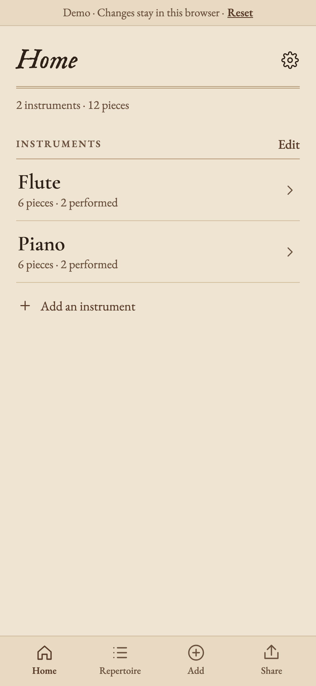
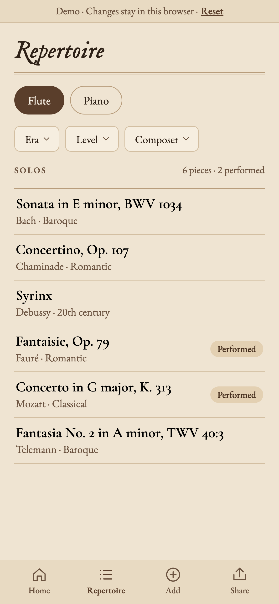
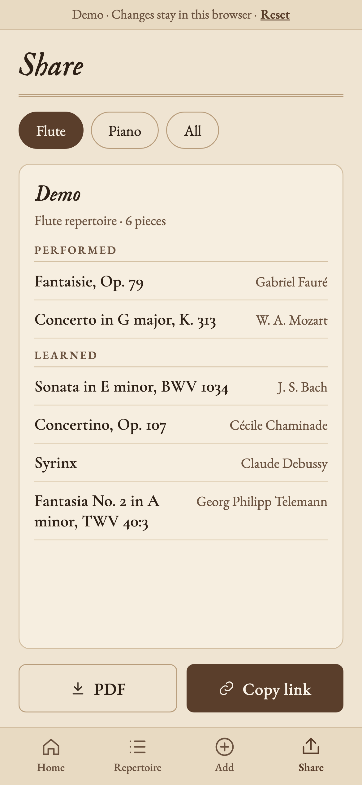

Every piece you've ever played.
try it in your browser ↗try-opus.netlify.app · nothing leaves your browseri've played flute for over ten years, and every new teacher starts the same way: "so… what have you played?" it's hard to remember in the moment, and a lot of my old books weren't easy to get to.
opus is the list i wish i'd kept. pick your instruments, add the pieces you've learned, and share it in one link.
can't remember what you played? "jog my memory" plays short openings of the pieces most students learn at your level. if it sounds familiar, add it. if not, skip.
a few things i was strict about:
the demo runs right in your browser. make an account, add a few pieces, and share your list.


